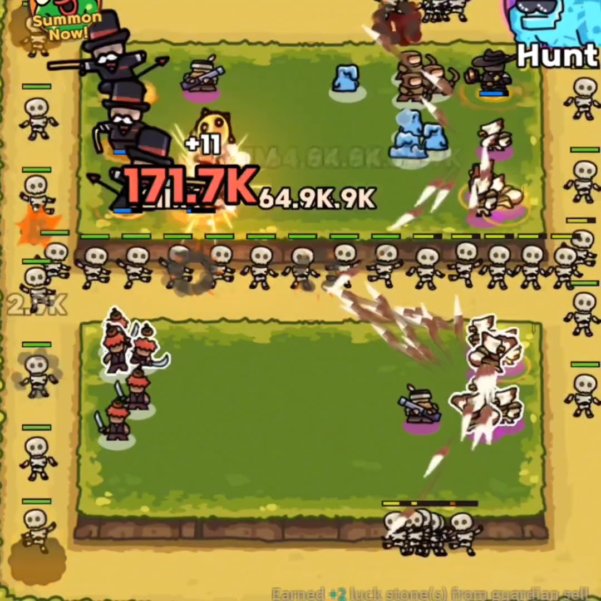

The most overlooked units
Have you ever had a game where you had 10+ mythics on the board all at the same time, but still somehow lost? You get so many strong mythics out there, you feel like you should win easily but you don't? This happens all the time, and it's because people don't know that a couple of the best units in the game aren't mythics at all.
Let me show you some units that are almost required in every run to win.


Using stun to increase damage
Why are these listed as some of the best units? Let's say you have a mythic that can hit an entire group of enemies really hard, but all the enemies are spread out far apart like in this picture.
When batman uses his ult or any of his strongest attacks, he's only going to hit the enemies that are right next to him. So what if we stun all the enemies so that they're all clumped together right next to batman? Take the following clip for example.

Every time batman does his heavy attack, he hits every enemy currently in the game.
For this demonstration, me and the other player both sell our stun units right after this same clip. Watch what happens when we do that.

Instantly they overwhelm us. None of them are taking much damage anymore. They're nearly at full health when they run past and start to surround the entire battlefield. We lost that game as soon as we sold all our stuns.
How much stun do you need?
If you have enough stun, the enemies should be almost completely locked in place right next to your attacking mythics. A very common stun layout is to have 1 full stack of the epic electro bot, and 2 full stacks of the blue shock robot, and have the same layout on both sides. Below is an example of a stun layout that is very close to that.
In this picture, we have 1 full stack of purple stun on both sides, and 2 full stacks of blue stun on both sides. Here we also have it moved more towards the back end so that our monopoly men can get more lucky coins from casting their ults while they head towards the stun we've placed next to our dps mythics. You can put stuns close to the front as well, as long as you're stunning the enemies within range of your dps mythics.
Using these stun placements, the information in the defense reduction guide, at least level 1 sb/mg, and some practice, you can start to clear hard mode without being carried. With a partner who knows all of the fundamentals such as this, you will start clearing hard mode all the time.
Good luck!
back